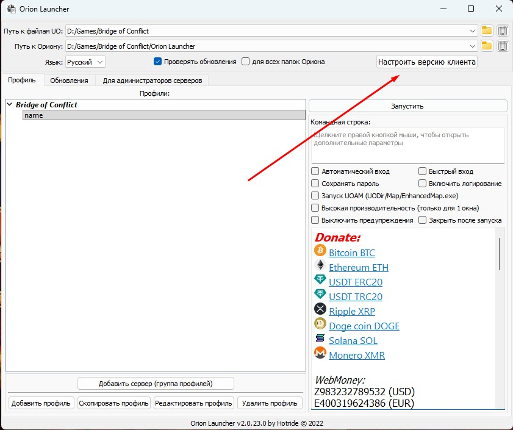
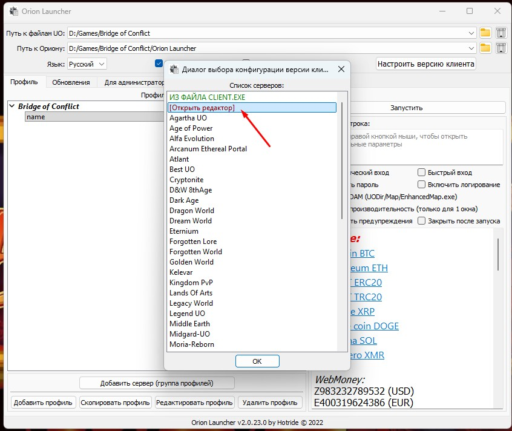
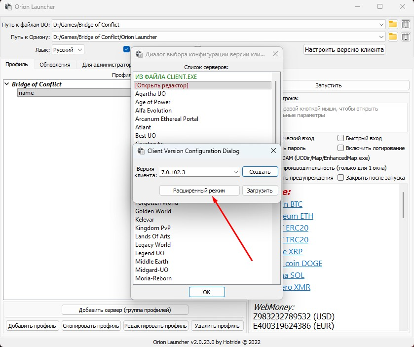
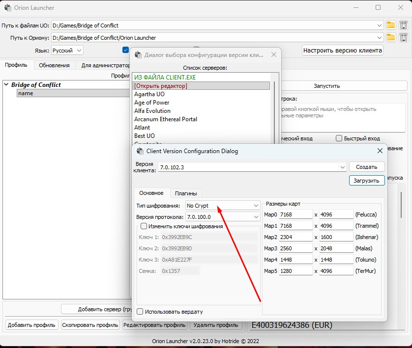
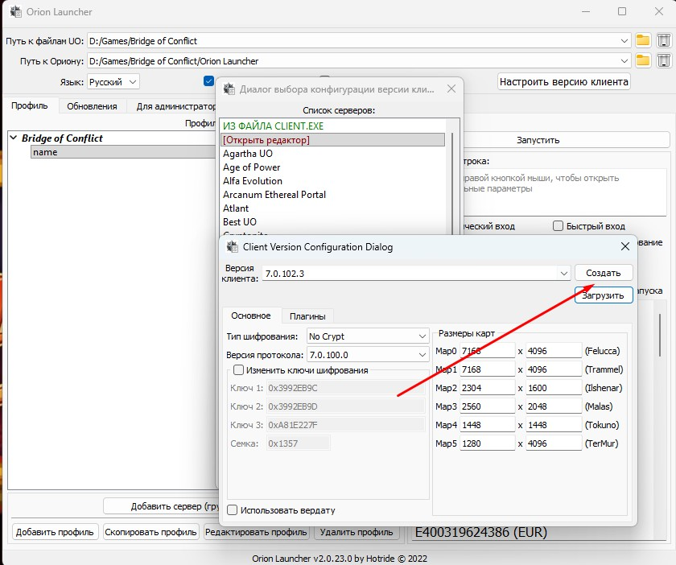
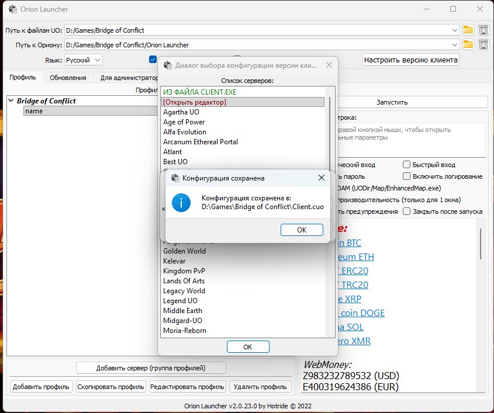
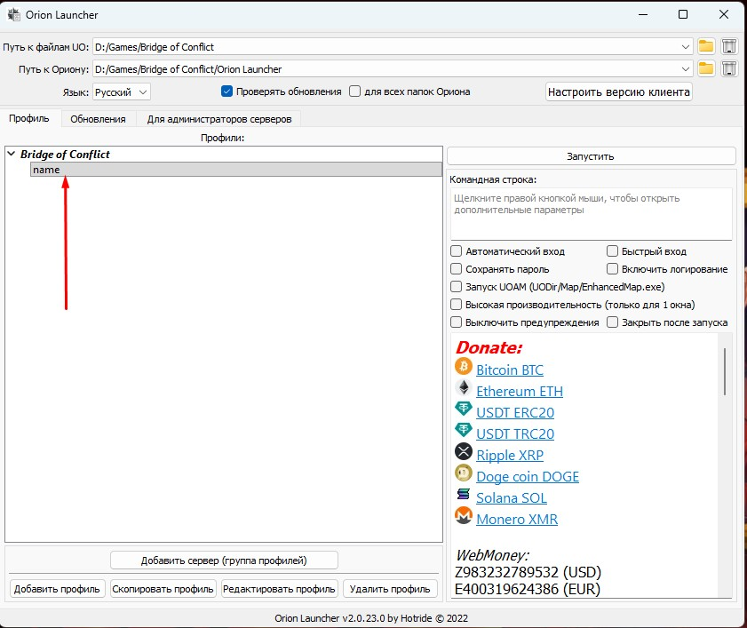

Настройка клиента Орион
Пошагово: как играть на Bridge of Conflict через OrionUO (Orion Launcher), без файла Play_BoC.cmd. Займёт 5–10 минут.
Скачайте файлы игры
Скачайте наш архив клиента и распакуйте его, например, в D:\Games\Bridge of Conflict. Не распаковывайте в Program Files: Windows не даст клиенту записывать настройки.
Файлы игры лежат в папке BoC_Client\UO. Её и нужно будет указать Ориону. Запускать Play_BoC.cmd не нужно.
Скачайте Orion Launcher
Скачайте лаунчер с официальной страницы проекта OrionUO и распакуйте в отдельную папку, например D:\Games\Bridge of Conflict\Orion Launcher. Запустите OrionLauncher.exe.
Укажите папки и откройте настройку версии
- Путь к файлам UO — папка с файлами игры из шага 1 (
...\BoC_Client\UO). - Путь к Ориону — папка лаунчера из шага 2.
- Язык — Русский.
Затем нажмите «Настроить версию клиента».

Откройте редактор
В списке серверов выберите строку «[Открыть редактор]». Нашего сервера в этом списке нет, настройку создаём сами.

Версия 7.0.102.3 и расширенный режим
В поле «Версия клиента» выберите 7.0.102.3 и нажмите «Расширенный режим».

Без шифрования — и «Создать»
- Тип шифрования —
No Crypt. Это главное: с шифрованием сервер не пустит. - Версия протокола —
7.0.100.0(подставится сама). - Размеры карт и ключи не трогайте.
Нажмите «Создать». Лаунчер сохранит файл Client.cuo в папку с файлами игры — нажмите OK.



Профиль сервера
Нажмите «Добавить сервер (группа профилей)» и назовите группу, например, Bridge of Conflict. Затем «Добавить профиль» и в окне профиля укажите:
- адрес сервера
46.175.147.143, порт2593; - логин и пароль вашего аккаунта (если аккаунта ещё нет — придумайте, он создастся при первом входе).
Сохраните профиль и выберите его в списке. Изменить профиль потом можно кнопкой «Редактировать профиль».

Запуск и первый вход
Выберите профиль и нажмите «Запустить». На экране входа введите логин и пароль: при первом входе аккаунт создастся сам. До 3 персонажей на аккаунт.
Дальше выберите фракцию и класс — получите готовый набор и 1000 золота. Новичку помогает [Guide, расписание — [события, новости — [news. В чат пишут с запятой в начале строки: ,привет всем.
Если не получается
- Не подключается или сразу отключает — проверьте шаг 6: шифрование должно быть
No Crypt, версия7.0.102.3. Проверьте адрес и порт в профиле. - Пишет, что не найдены файлы — «Путь к файлам UO» должен вести в папку, где лежат
tiledata.mulиmap0.mul(BoC_Client\UO). - Антивирус ругается на лаунчер — добавьте папку Ориона в исключения или скачайте лаунчер заново с официальной страницы.
- Не помогло — пишите в Discord, приложите скриншот ошибки.